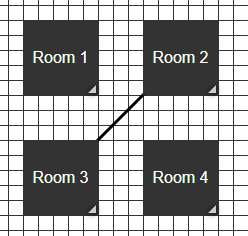
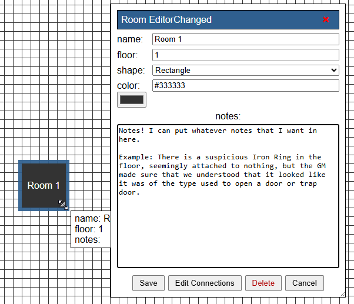

So, what is Roombound?
Basically, it's a place to keep track of rooms and locations and how they connect to each other. I originally had tabletop RPG exploration in mind, but there's no particular reason your map has to be a dungeon. Buildings, cities, ships, complexes, wilderness areas... if you can describe it as a collection of connected places, Roombound can probably keep track of it.
The important thing to understand is that this isn't a battlemap. Move rooms around wherever they make the most sense, connect them however you need to, and use the notes to remember the things that aren't obvious from the map itself.
The goal is pretty simple: when you look at your map six hours later, you should still be able to figure out what you've seen, what connects to what, and where that suspicious unexplored doorway was.
Want to see what Roombound can do before making your own map? Try the demo map.
This page is currently under construction. Documentation for Roombound's features will be added here as they become available.
Getting Started
This section will explain the basics of creating and working with a Roombound map.
Creating a Map
There isn't much to set up before you start. Just click Return to Roombound at the top of this page to go back to the map editor.
Working with Rooms
Once you're there, you can start adding rooms immediately. Double-click anywhere on the map to create a room at that location. You can also right-click anywhere on the map and select the option to create a new room.
Once you have a few rooms on the map, you'll probably want to connect them.
Connecting Rooms (Connections)
To create a connection, right-click a room and select Create Connection. Roombound will ask you to select the other room that you want to connect it to.

When creating a connection, a small window will appear. Notice that in the Room A section, the room you right-clicked is already selected.
If you know the name of the room you want to connect to, just select it in the Room B section and click Create.

Once both rooms have been selected, Roombound will create the connection between them.

That's really all you need to get a basic map up and running. The rest of this help page covers what you can do once you've got the basics down.
Rooms
What is a Room?
A room is just an indicator that something happens there. In a normal TTRPG, that's usually a room. You fight goblins and orcs, find and (hopefully) disable traps, discover treasure, solve puzzles—you do any and everything inside of a room.
In Roombound, a room is a logical unit where you can set its name, how large it is (really only useful when compared to other rooms), what color it is (if color helps it mean anything special to you), what shape it is (I tend to leave mine as very basic shapes based on what the battle map gave us, or use a star to remind myself that a room has something important), and a notes section where you can put any text you want.
Moving Rooms.
To move a room, you just need to click and drag the room. If you have multiple rooms selected (see Selection below), dragging one of the selected rooms will drag all of them.
Editing Rooms.
There are two easy ways to edit a room. Double click on the room (this will only ever pull up the room editor for that specific room), or you can right click a room and select "Open Room Editor" (this should always be the very top option).
Room Editor

- Name: changing this field will change the name you can see on the room
- Floor: you may have made and filled out a room on the wrong floor. This lets you move the room without deleting it and remaking it.
- Shape: There are 7 different shapes, Rectangle, Circle, Triangle, Diamond, Hexagon, Octagon, and a Star. there is no real change on any layer other than visual, but it can be nice to set a room to something else because it either fits the battle map better, or reminds you that there was something special there.
- Color: this is both a text field and a color picker depending on your need. you can find a color that you like in the picker, and then copy it to be used again later.
- Notes: Anything text based can go in here. (see example screenshot above)
- Save: This will save what you have changed in the room (note that the title of the room editor will let you know that something has changed.)
- Edit Connections: This will bring you to the connection editor with all the connections that this room is a part of (see Connections below)
- Delete: Hitting this will delete the room that you selected. This can be changed in the Options window.
- Cancel: Hitting this button will cancel any changes and the room will not change.
Groups
More information about groups will be available here.
Connections
More information about connections will be available here.
Saving & Loading Maps
More information about saving and loading maps will be available here.
Sharing Maps
More information about sharing maps will be available here.
Floor Control
More information about sharing maps will be available here.
Zoom
More information about sharing maps will be available here.